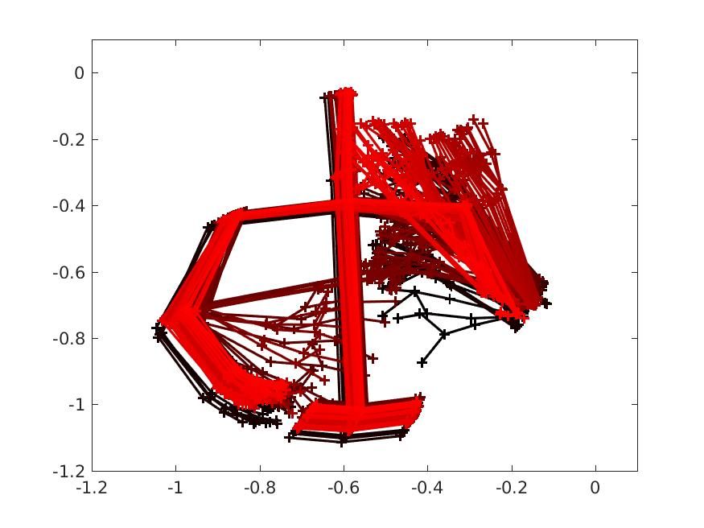
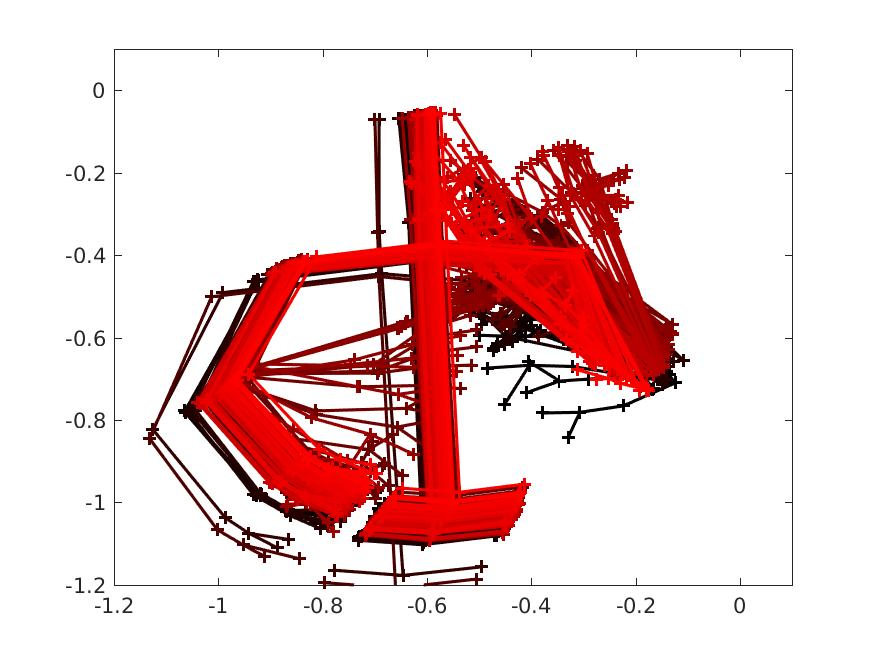
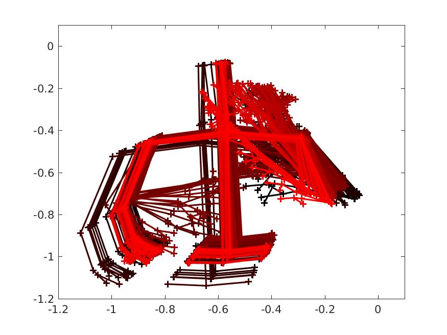
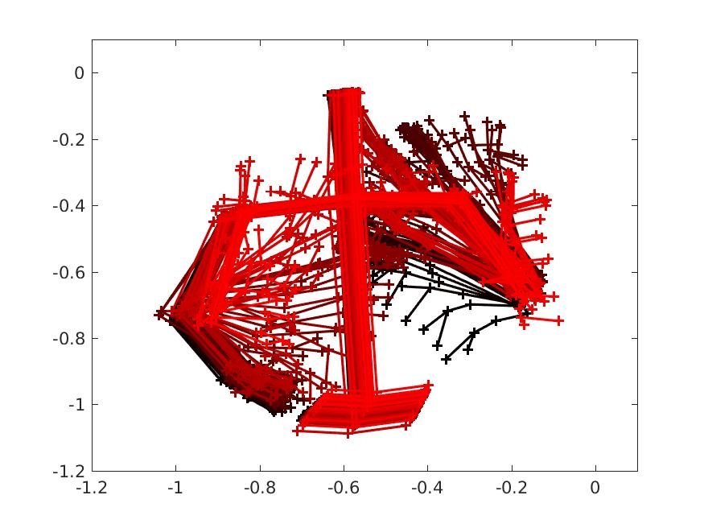
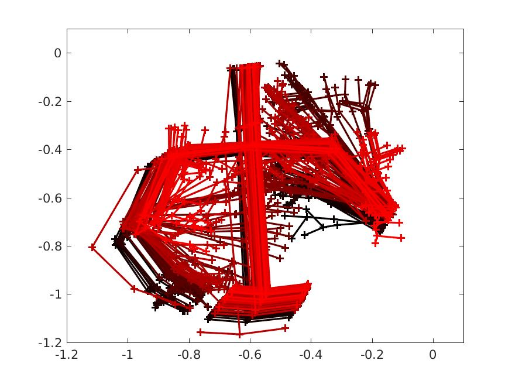
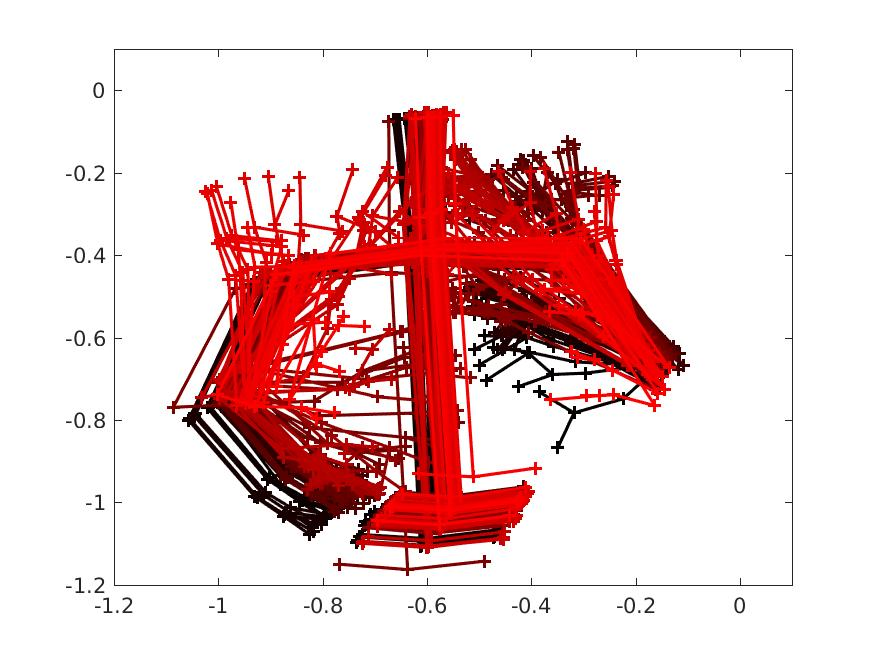
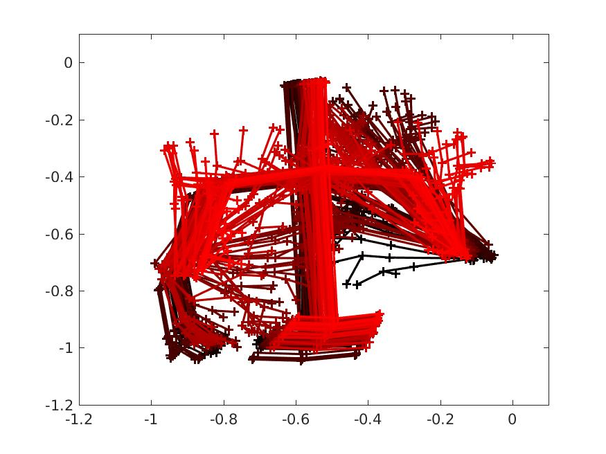
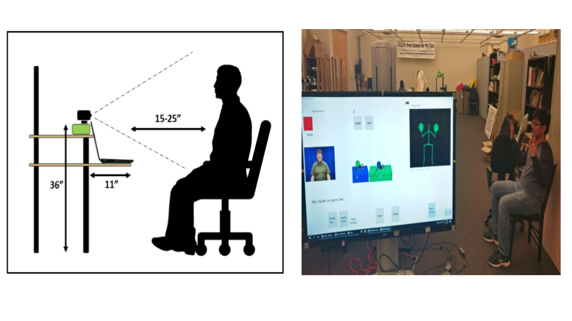
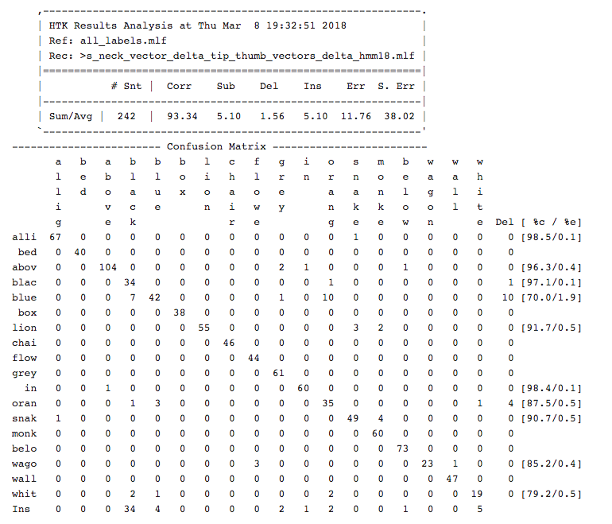

Copycat video
As part of the CopyCat project, six computer-assisted language learning games are being designed. The games appeal to children between the ages of 6 and 11. Each game entails a quest by a hero to collect items in order to remediate a problem. Each quest begins with an introduction which sets up the story line where the child must help the hero recover stolen items. In each quest, the learners interact with the hero via sign language to tell the hero where a guard animal and a desired item are hiding. The guard animals are snakes, alligators, spiders, and 'bad' cats. The guards are always hiding in, on, under, or behind various colored objects with the desired item close by. In order to collect the desired item, the participant must sign the phrase describing the guard's location correctly, thus informing the heroine, Iris the Cat, where to 'poof' the guard.
95% of deaf children are born to hearing parents who may not know sign language or have low levels of proficiency (gallaudet- 2001). Unlike hearing children of English--speaking parents or deaf children of signing parents, these children often lack the serendipitous access to language at home necessary for developing linguistic skills. Often these children's only exposure to language is from signing at school, leading to a linguistically impoverished environment. Linguists have identified a 'critical period' for sign language development during which a child must be exposed to and immersed in a language. By two years of age, hearing children learning spoken language are combining words in their expressive communication. By one and a half years, deaf signing children of deaf parents are also combining signs to communicate. A third group, deaf children of hearing parents, develop language in the same sequence as the first two groups, however, at a much slower pace. The slower linguistic development of this group has been attributed to a lack of daily interaction using language and an incomplete mental model of language. Even more disturbing, studies have linked delayed language acquisition with delayed short term memory development.
|    |
|     |
Here in first row the pharse is :White_snake_in_blue_flowers_2 and in second row the phrase is: White_cat_on_orange_wall_2 We can clearly distinguish betweent the phrases. This motion templates were used for removing the noise image/incorrect image. Various techniques were tried(SVM, KNN, Mahalobnois distance, CNN ). Currently due to less accuracy data is manually seperated from the training set using the motion template image.
The data collection setup is shown in the figure below. The person sitting infront of the kinect camera performs Copycat dataset gestures. Kinect records the data.
Recognition results are shown in the accuracy matrix below. Verfification accuracy is 100%. The setup is deployed in Context Computing Lab of Georgia Tech.
